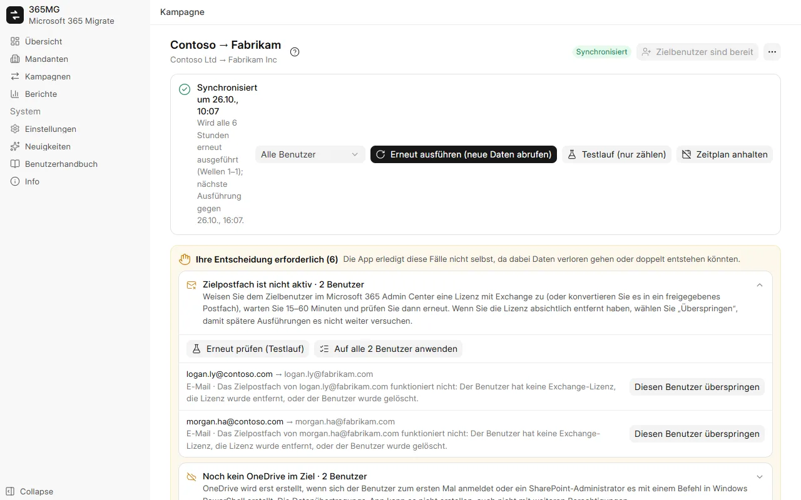

Viele Mandanten, viele Kampagnen
Melden Sie sich pro Mandant einmal als globaler Administrator an. 365MG prüft Berechtigungen und Lizenzen und führt dann beliebig viele Kampagnen zwischen ihnen aus.
Microsoft 365-Migration von Mandant zu Mandant
365MG kopiert E-Mails, Kontakte, Kalender, OneDrive und E-Mail-Gruppen zwischen Mandanten von Ihrem eigenen Windows-PC aus. Es führt ein Journal über jedes Element, läuft ohne Duplikate erneut und hält an, um Sie zu fragen, sobald eine Entscheidung Daten verlieren oder verdoppeln könnte.

Melden Sie sich pro Mandant einmal als globaler Administrator an. 365MG prüft Berechtigungen und Lizenzen und führt dann beliebig viele Kampagnen zwischen ihnen aus.
Wählen Sie Quellbenutzer mit Filtern aus, ordnen Sie sie automatisch Zielbenutzern zu, weisen Sie Zieldomäne und Lizenz per Massenaktion zu und erstellen Sie fehlende Benutzer.
Exportiert und importiert jedes Element über die Exchange-Postfach-API, Ordner für Ordner, mit einem Journal pro Element, sodass eine beendete Ausführung dort fortsetzt, wo sie aufgehört hat.
Kopiert Dateien und Ordner, behält Erstellungs- und Änderungsdatum bei, prüft jede Datei per quickXorHash und lädt große Dateien in fortsetzbaren 64-MB-Bereichen herunter.
Erstellt Verteilerlisten und E-Mail-aktivierte Gruppen als Microsoft 365-Gruppen mit demselben Alias, denselben Mitgliedern und Besitzern neu.
Teilen Sie Benutzer in Wellen auf, zählen Sie, was eine Ausführung kopieren würde, ohne etwas zu schreiben, kopieren Sie dann wirklich und synchronisieren Sie nach Zeitplan weiter bis zur Umstellung.
Fehlende Zielpostfächer oder OneDrives, neu erstellte Benutzer, Elemente mit unbekanntem Ergebnis: Jeder Fall landet in der Liste „Ihre Entscheidung erforderlich“, mit den Aktionen, die ihn klären.
Quelle gegenüber Kopiertem pro Benutzer und insgesamt, zu prüfende Benutzer, Gruppen und Hinweise; Export als eigenständige HTML-Seite oder CSV.
English, Tiếng Việt, 简体中文, 한국어, 日本語, Deutsch, Русский, हिन्दी und العربية (von rechts nach links).
Jede Schutzmaßnahme geht auf etwas zurück, das beim Umzug eines Unternehmens mit 350 Benutzern schiefging: Postfächer, die mittendrin ihre Lizenz verloren, OneDrives, die noch nicht existierten, Verbindungen, die beim Senden abbrachen.

365MG wird vom Autor vertrieben. Schreiben Sie für ein Installationsprogramm, eine Demo oder Hilfe bei einer Migration.